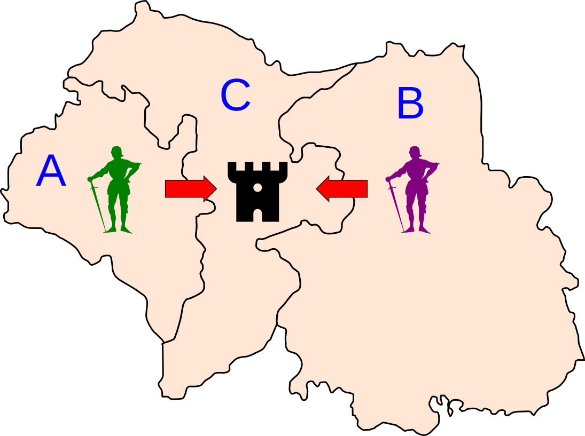
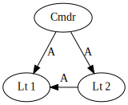
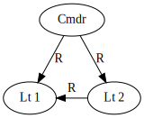
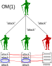
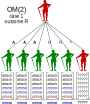

# CS 4501 ### Cryptocurrency <p class='titlep'> </p> <div class="titlesmall"><p> <a href="http://www.cs.virginia.edu/~asb">Aaron Bloomfield</a> (aaron@virginia.edu)<br> <a href="http://github.com/aaronbloomfield/ccc">@github</a> | <a href="index.html">↑</a> | <a href="./03-numbers.html?print-pdf"><img class="print" width="20" src="../slides/images/print-icon.png" style="top:0px;vertical-align:middle"></a> </p></div> <p class='titlep'> </p> ## Consensus
# Contents [Nakamoto Consensus](#/satoshi) [Two Generals Problem](#/2gen) [Byzantine Generals Problem](#/byz) [Three Generals Problem](#/3gen) [Oral Messages Algorithm](#/om) [Signed Messages Algorithm](#/sm) [Tendermint](#/tendermint)
# Nakamoto Consensus
## Nakamoto Consensus - Named for Satoshi Nakamoto, the creator of Bitcoin - Proof of Work consensus algorithm - A miner find a block, and sends it to a node that propagates it to other nodes via the [gossip protocol](https://en.wikipedia.org/wiki/Gossip_protocol) - Basically: each node checks it, sends it to a few others, who check it, send it to a few others, etc. - Honest nodes agree a block is valid if: - It is correctly formed (valid transactions, parses correctly, timely, etc.) - It's hash is less than the target - It extends the (or a) longest chain ## Breaking Nakamoto Consensus - If each node gets one vote, then we need a strict majority ($>$50%) to vote against a block - Thus, this algorithm can be contravened if an attacker controls a majority of the nodes - There are currently about 15k nodes as per [bitnodes.io](https://bitnodes.io/) - But if an attacker controlled that many... - ... they could likely make more money by playing "by the rules" ## Consensus Properties - Any consensus algorithm must guarantee: - Consistency: honest nodes do not contradict each other - Liveliness: blockchain progress is made (regular block completion) ## Nakamoto Consensus and PoS - The Nakamoto Consensus algorithm was designed for a proof-of-work coin - It does not work for other proof-of-$X$ types
# Two Generals Problem
## Distributed System Failures - Could be caused by: - Flaky, slow, or malicious nodes - Flaky, slow, or malicious communication links - Used in: - B777 & B787 flight controls ## Two Generals Problem  ## Two Generals Problem - Armies A & B, each led by generals, want to attack army C - They have to decide whether to both attack (they will win) - Or both retreat (not ideal, but acceptable) - If only one attacks, they will lose: a military disaster (rout) - Messages are via couriers who travel through army C's territory - So the messages are unreliable - How does general A communicate s/he wants to attack to general B? - Knowing that the messages could be intercepted - In this example, the *generals* are loyal, and their means of communication is unreliable
## Communication protocol  ## Communication protocol  ## Communication protocol  ## Communication protocol  ## Communication protocol  ## Communication protocol 
## A better protocol - A decides to attack and sends 100 couriers to B to notify this - If only one gets through, then B attacks - This would work well in practice, but is not guaranteed! - But what if all 100 are stopped? - Ultimately: > If there is a complete failure in your communication system, then there is no way to achieve a consensus ## In practice - This type of problem assumes that the communication mode is unreliable, not malicious - If it's malicious, then we can help solve that with digital signatures
# Byzantine Generals Problem
## Byzantine Generals Problem - We assume that the network is not malicious, and the nodes (generals) themselves can get corrupted - Meaning any individual general can be a traitor - Messages may not arrive, but the communication medium is not malicious - A group of generals need to decide whether to attack a fortress - This problem is The Byzantine General's Problem - Based on a [paper of the same name from 1982](https://lamport.azurewebsites.net/pubs/byz.pdf) - If a system has *Byzantine Fault Tolerance* then it has solved this problem ## Byzantine Generals Problem ## Byzantine Generals Problem - A group of generals have to decide whether to attack or retreat - Some are loyal and some are traitors - Loyal generals may still disagree - The *communication lines* are generally sound - Any fault or malice in the communication lines can be modeled by a malicious general - However, there are no digital signatures (yet) - Goal: for the *loyal* generals to all agree on a strategy ## Traitorous complications - Imagine a group of 9 generals - 4 want to attack - 4 want to retreat - 1 is a traitor - The traitor could cast *different* votes to the different groups, causing a rout - In electronics, voltage fluctuations could cause differing results to different parties ## Byzantine Fault Tolerance - All *loyal* generals must agree on what *all* the other generals say - But keep in mind that traitorous generals can give different answers to different generals - It doesn't matter what the traitorous generals think everybody says - Nor does it matter what the loyal generals think the traitorous generals say ## Messages may not arrive - Either because of a communication failure or a node maliciously not sending such a message - The former can be modeled by the latter - So we'll assume that the communication lines are reliable - This is represented as *null* or the empty set symbol: $\emptyset$ - The generals have pre-agreed that a majority of non-votes has a *default action* - We'll assume a majority of $\emptyset$ votes means retreat - Thus, messages are one of three values: {$A,R,\emptyset$} ## Toward a solution - The generals are numbered 0 to $n-1$ - Each has an array $v$ that holds the opinion of each of the generals - Byzantine fault tolerance requires that all loyal generals (nodes, etc.) take the same action - Remember: messages are (currently) "oral" with no digital signatures ## Insight - If we can solve the *communication* problem... - Specifically if we can ensure that all loyal generals agree on the same values in the array $v$ - Then we can solve the Byzantine Generals Problem - Just take the majority vote - So how can one general get his/her vote to the other generals? ## Traitor tolerance - The algorithm must be able to withstand some number of traitors - How many traitors can exist while allowing correct communication among the loyal nodes? - Consider one general communicating his/her intentions to the other generals - We will call the "receiving" generals here lieutenants
# Three Generals Problem
## The Problem - There is one general who needs to communicate his/her orders to $n-1$ lieutenants - We'll focus on $n=3$, hence the name "Three Generals Problem" - But $n$ can be any positive integer - Some number $m$ of participants are traitors - Maybe the general too! - This is solving a *communication* problem, which will be used to solve the overall Byzantine Generals Problem ## Base cases - $n=1$: If there is only one Byzantine general, then whatever s/he thinks is the consensus - Since s/he is the only one voting! - $n=2$: If there are two generals: - If both agree, at which point there is consensus - Or they disagree, at which point no consensus can be had - They may disagree because one is a traitor or because loyal generals can disagree - Thus, we need to consider cases of three or more generals - $n \ge 3$ <!-- .slide: class="right-float-img" --> ## Communication - One general needs to communicate his/her opinion to the other generals - In the full BGP, all generals have to do this with all the others - Here, the receiving generals are called lieutenants for this - After hearing an order from the general, each lieutenant will *verify* it with each other lieutenant ## How many traitors? - How many traitors can an algorithm withstand and still work? > Hypothesis: this communication must have less than 1/3 be traitors - Rephrased: given $m$ traitors, there must be at least $3m+1$ total participants - First, show that 1 traitor out of 3 generals will not succeed - Or, if $m=1$, then $3m$ generals is insufficient, and we need *more* than $3m$ generals - It analogizes attacking or retreating to message communication <!-- .slide: class="right-float-img" --> ## Three Generals Problem  - A general sends a message to his two lieutenants: - The message is either "Attack" (A) or "Retreat" (R) - The "lieutenants" are just the two receiving the message, but could also be generals in the full BGP - Lieutenant 1 checks the validity of that message by asking lieutenant 2 what the general said - But somebody could be a traitor! - There are 8 possibilities: messages $a$, $b$, and $c$ can each be one of A (attack) or R (retreat) ## Three Generals Problem - Assumptions: - All *loyal* lieutenants should take the same action, else it's a military disaster (rout) - *Loyal* lieutenants always obey the general's order - *Traitorous* lieutenants take the action that will lead to a disaster - Messages are "oral" and cannot be verified - No digital signatures (yet) - The requirements for this to succeed are: 1. All loyal lieutenants obey the same order 2. If the general is loyal, then every loyal lieutenant obeys the same order 3. Every loyal lieutenant must agree on what everybody else said ## Analogies - The full Byzantine Generals Problem wants all loyal generals to take the same action - The Three Generals problem is only modeling their communication, and only wants the *lieutenants* to take the same action - Although the general, if loyal, needs to take the same action as the (loyal) lieutenants ## Three Generals Problem - Question: can this work if there is exactly one traitor?  - We thus are not considering the scenarios where all are loyal or two (or more) are traitors - This is from the point of lieutenant 1, who is assumed to be loyal - Since we are considering the case when there is only one traitor, lieutenants 1 and 2 cannot *both* be traitors; thus assume lieutenant 1 is the loyal one ## Three Generals Problem - Two of the eight cases are when all messages are communicated properly: <table class="transparent"><tr> <td></td> <td></td> </tr></table> - The general sent the same message, so must be loyal - Lieutenant 2 sent the received message, so must be loyal - This is the everybody-is-loyal case, which we not considering here - But everybody takes the same action, so it's a success ## Three Generals Problem - Two of the eight cases are where there are two traitors: <table class="transparent"><tr> <td></td> <td></td> </tr></table> - The general sent different messages, so must be a traitor - Lieutenant 2 changed the message, so must be a traitor - If lieutenant 2 is a traitor and did *not* change the message, it is the same as the two cases on the next slide - This is the two traitors case, which we are not considering - But the two lieutenants take different actions, which is a disaster ## Three Generals Problem - Two of the eight cases are where the general is a traitor: <table class="transparent"><tr> <td></td> <td></td> </tr></table> - The general sent different messages, so must be a traitor - Lieutenant 2 sent the received message, so must be loyal - Or was a traitor, but still sent the received message - Lieutenants 1 and 2 received *different* messages - As they are both loyal, they take the action received from the general - Since they are different actions, it's a disaster ## Three Generals Problem - Two of the eight cases are where there lieutenant 2 is a traitor: <table class="transparent"><tr> <td></td> <td></td> </tr></table> - The general sent the same message, so must be loyal - Lieutenant 2 changed the message, so must be a traitor - Lieutenant 1, having received different messages and being loyal, takes the action received from the general - Lieutenant 2, being a traitor, takes the opposite action - As they are different actions, it's a disaster ## Result > It is impossible to solve the 3 generals, 1 traitor case of the Three Generals Problem This implies: > It is also impossible to solve the 3 generals, 1 traitor case of the *Byzantine* Generals Problem ## Mapping back to Byzantine Generals - Three Generals Problem: - If a lieutenant hears *different* messages from the general and the other lieutenant, then it's a disaster - Byzantine Generals Problem, specifically the communication therein: - If there are three generals communicating, and one hears *different* vote results from the other two about a given general's opinion, s/he cannot determine the correct value for that vote ## Generalized claim - We know there is no solution for the 3 generals, 1 traitor problem - What about with more generals? > Claim: There is no solution for $3m+1$ generals with $>m$ traitors - We will prove this by contradiction - Assume you *do* have such a solution for, say, $m=4$ - Meaning you have found a way, with 12 generals and 4 traitors, to solve the Byzantine Generals Problem ## Generalized claim - Proof by contradiction; assume you can solve the 12 generals, 4 traitors case - Take the 3 generals, 1 traitor case and let each general delegate his/her role to 4 colonels each - We know the 3 generals, 1 traitor case has no solution - Each delegated colonels is of the same loyalty as the general that delegated to him/her - We now have 12 colonels, 4 of which are traitors ## Generalized claim - Those 12 colonels run the proposed solution among themselves - Since there is a claimed solution, the 8 loyal colonels will come to a consensus and report that back to their respective generals - Thus, we could use such a solution to solve the 3 generals, 1 traitor case - Which we know cannot be solved - Hence a contradiction; such a generalized solution cannot then exist ## Generalized claim > Proven: There is no solution for $3m+1$ generals with $>m$ traitors - We've only shown that we can't have *more than* $m$ traitors - But is there a solution for $3m+1$ generals and exactly $m$ traitors? - Or less than $m$ traitors?
# Oral Messages Algorithm
## Assumptions - Messages are communicated "orally"; this means: - If A tells B a message... - And B tells C what A said... - Then there is no way for C to verify that A really said that - In other words, no digital signatures! - Formally, we assume: 1. Every message that is sent is delivered correctly 2. The receiver of a message knows who sent it 3. The absence of a message can be detected ## Oral Messages Algorithm - Referred to as $OM(m)$, this is a solution for the Byzantine Generals Problem - $m$ is the maximum number of traitors that can be tolerated - Must have strictly less than 1/3 traitors - So $OM(1)$ must have at least 4 generals - $OM(2)$ at least 7 generals - $OM(m)$ must have at least $3m+1$ generals ## Oral Messages Algorithm - Algorithm: - The general sends messages to each lieutenant - Lieutenants: - Records order received - Uses $OM(m-1)$ to tell the other lieutenants what the general said - The lieutenants follow `majority()` order - A tie has a pre-determined default action, say, retreat - Recall the goal: for the *loyal* generals to all agree on a strategy - This requires that each loyal general agree on what *all* the other generals say ## `majority()` function - Empty values count as a default action (say, retreat) - If a tie, then choose default action (say, retreat) - Two possible versions: 1. If a majority exists, then choose that action 2. Choose the median value (if from an ordered set) - We'll assume the first, but either would be correct ## Missing Messages - A missing message could be because of a communication issue or a traitor not sending a message - Their appearance is the same, so we'll model the former with the latter - All missing messages have a default value, say, retreat - Because of the default value, we can model missing messages with retreat orders - And thus ignore missing messages
## Showing $OM(0)$
<!-- .slide: class="right-float-img" --> ## $OM(0)$ - If there are no traitors, no need to have the lieutenants verify the message - This is a base case - This is really just one participant broadcasting out his/her message <!-- .slide: class="right-float-img" --> ## $OM(0)$ Running time - If there were really no traitors, then the lieutenants would not need to communicate with each other - The general communicates with his/her $n-1$ lieutenants, so it's $\Theta(n)$ - We are assuming a broadcast is $\Theta(n)$, not $\Theta(1)$ - In practice, this case is treated as $OM(1)$ for communication purposes
## Showing $OM(1)$, step 1 ## Showing $OM(1)$, step 2 ## Showing $OM(1)$, step 3 ## Showing $OM(1)$, step 4 ## $OM(1)$ traitor case 1 ## $OM(1)$ traitor case 2 ## $OM(1)$ traitor case 2 
<!-- .slide: class="right-float-img" --> ## $OM(1)$ Running time - Each of the $n-1$ lieutenants performs $OM(0)$ with the other $n-2$ lieutenants - And we have established that $OM(0)$ is $\Theta(n)$ - Thus, it's $\Theta(n^2)$ ## $OM(1)$ - Just to repeat: - $OM(1)$ guarantees that, with at least 4 participants and at most one traitor, then all the *loyal* lieutenants will agree a course of action - Even if the general gave conflicting orders ## What about $OM(2)$? - This is the 7 generals, 2 traitors problem - Three cases: 1. The general and one lieutenant are traitors 2. The general is loyal, and two lieutenants are traitors 3. Fewer than 2 are traitors - But that's really the $OM(1)$ or $OM(0)$ case, so we'll ignore it here - This is all from the point of view of a loyal lieutenant ## Showing $OM(2)$, case 1 <!-- .slide: class="right-float-img" --> ## $OM(2)$, case 1 - The general and one lieutenant are traitors - The general will give varying orders - Each lieutenant will perform $OM(1)$ to get their array $v$ of messages - There is only one traitor among the lieutenants, so $OM(1)$ will work properly - And we know $OM(1)$ works (in $\Theta(n^2)$ time) - If $n-1$ lieutenants perform an $\Theta(n^2)$ operation (i.e., $OM(1)$), then the total running time is $\Theta(n^3)$ ## Recall $OM(1)$ - $OM(1)$ means all *loyal* lieutenants will agree a single course of action based on what the message sender said - Whether attack or retreat - When the traitor is sending out his/her vote, s/he is using $OM(1)$, so all the loyal lieutenants will agree on a single message of what the traitor said - This means that we won't have some loyal lieutenants thinking one thing and others something different for the traitor's message - Thus, the bottom row in the previous (and next) slide must all have the same values!  ## Showing $OM(2)$, case 2 <!-- .slide: class="right-float-img" --> ## $OM(2)$, case 2 - The general is loyal and two lieutenants are traitors - The general will the same order to all - Each lieutenant will perform $OM(1)$ to send out their message - And we know $OM(1) \in \Theta(n^2)$ - Even though there are two traitors, the loyal lieutenants all received the same message - And they are in the majority - So they will all agree on the same decision - If $n-1$ lieutenants perform an $\Theta(n^2)$ operation (i.e., $OM(1)$), then the total running time is $\Theta(n^3)$
<!-- .slide: class="right-float-img" --> ## $OM(2)$, case 2 - The messages the loyal lieutenants receive from the traitors may not all be the same! - Since $OM(1)$ does not work with 6 generals, 2 traitors - These are the blue-circled values - But their majority vote will still be attack - So the overall $OM(2)$ algorithm still works in this case ## Message communication | $m$ | Msgs sent | |--------|--------| | 0 | $\Theta(n)$ | | 1 | $\Theta(n^2)$ | | 2 | $\Theta(n^3)$ | | 3 | $\Theta(n^4)$ | - Or $\Theta(n^{m+1})$ - This is a very expensive algorithm! - Try to keep $m$ and $n$ small - While inefficient, we have found a solution!
# Signed Messages Algorithm
<!-- .slide: class="right-float-img" --> ## Problems with $OM(m)$ <img src="https://upload.wikimedia.org/wikipedia/commons/thumb/d/d2/Baronnet-signet-ring.JPG/800px-Baronnet-signet-ring.JPG" style="padding:0"> - It's *very* expensive - The lieutenants can lie - Let's change that: - When A sends a message to B... - And B tells that to C... - B cannot lie about what A said - In practice, this is implemented with digital signatures - Non-digitally, it's via handwritten signatures, signet rings, etc. ## Assumptions - Recall that messages always arrive correctly - Messages can now be verified - Meaning: if A tells B a message, and B tells C what A said, there *is* a way way for C to verify that A really said that - Formally, we assumed: 1. Every message that is sent is delivered correctly 2. The receiver of a message knows who sent it 3. The absence of a message can be detected - We now add an additional assumption: 4. The signatures, which has 3 parts: - A loyal general's signature cannot be forged - Any alteration of a loyal general's message can be detected - Anybody can verify the authenticity of a general's signature ## Notation and notes - Each lieutenant will have an array *V* (capital *V*) - A message will be lower-case *v* - A signed message will list all the signatories: - *v:0* means it was signed by person 0 (the general) - *v:0:1:3* means it was signed by the general and lieutenants 1 and 3 - Recall the goal: for the *loyal* generals to all agree on a strategy ## Signed Messages Algorithm - Referred to as $SM(m)$, where $m$ is the maximum number of traitors allowed where it will still operate correctly - Algorithm: - The general sends *signed* messages to each lieutenant - For each lieutenant *i*: - If the message is *v:0* (meaning from the general), then: - Verifies authenticity and records order received in *V[i]=v* - Signs that message to create *v:0:i*, and send to every other lieutenant - If the message is of the form *v:0:j<sub>1</sub>:j<sub>k</sub>*, then: - If *v* is not in set *V*, add it - If *k*$<$*m* (meaning the message was signed by less than *m* lieutenants), sign it and sent to everybody - When there will be no more messages, select `choice(V)` ## Function `choice()` - Recall that lieutenants can no longer forge the general's orders - If insufficient messages ($<$*m+1*) are received, take the default action (say, retreat) - If the general sent different messages to different lieutenants, then take a default action - Meaning if $|V|>1$ - Otherwise, follow the general's signed orders ## How many times to resend? - $SM(m)$ says resend it if the signature has $<$*m* signatures - This means that each lieutenant will receive *m+1* confirmations - The one from the general - And *m* more from lieutenants - If there are *m* traitors, then at least one of the *m+1* messages is from a loyal participant ## Showing $SM(1)$ Not much to do if there are no traitors ## Showing $SM(1)$, case 1 The general is a traitor, and sends out different messages <!-- .slide: class="right-float-img" --> ## $SM(1)$, case 1 - Each lieutenant broadcasts the message the general sent to them - As our communication is reliable, each broadcast is received by all the other lieutenants - Thus, if the general sends out different messages, everybody will know - It's a tie, so the loyal lieutenants will take the (same) default action ## Showing $SM(1)$, case 2 Lieutenant 2 (on the right) is a traitor, but cannot change the general's signed order <!-- .slide: class="right-float-img" --> ## $SM(1)$, case 2 - Lieutenant 2 (on the right) cannot force the general's signature, so must send the general's original message - The message sent along contains the general's original order - Which matches the one received by lieutenant 1 - Both the loyal participants (general and lieutenant 1) take the same action ## Showing $SM(1)$, case 3 Lieutenant 2 (on the right) is a traitor, and does not send a message to lieutenant 1 <!-- .slide: class="right-float-img" --> ## $SM(1)$, case 3 - Lieutenant 2 (on the right) opts not to send a message - The algorithm requires that *m+1* messages are received - The one from the general - And *m* more from lieutenants - Here *m=1*, and since $<$*m+1* messages have been received, the default action is taken - In general, if *m* traitors and *m+1* messages, the loyal lieutenant still has received one (valid) message - And all can take the same action ## How many traitors? - We just saw that the 3 general, 1 traitor version has a solution - In fact, $SM(m)$ only needs a minimum of $m+2$ participants - Proof omitted from this slide set, but briefly: - Case 1: - We have $m$ lieutenant traitors, 1 loyal lieutenant, and the loyal general - The loyal lieutenant receives the loyal general's message - Case 2: - We have $m-1$ lieutenant traitors, 2 loyal lieutenants, and the traitor general - The loyal lieutenant receives the loyal lieutenant's message - Full proof in the [original paper](https://lamport.azurewebsites.net/pubs/byz.pdf) ## Running time - Each of the $n-1$ lieutenants has to send messages to $n-2$ others - Those $n-2$ send messages to $n-3$ others - Running time is: $(n-1)\ast(n-2)\ast \ldots \(n-m+1)$ - Or $\Theta(n^{m+1})$, just like $OM(m)$ - Our running time did not get any better, but we can withstand many more traitors ## Complications and Optimizations - Optimizations - We can have "sub-groups" that communicate among themselves to lower the running time - Complications - What if not all generals can communicate with all other generals? - What if the communication medium is not synchronous? ## Practical Byzantine Fault Tolerance (PBFT) - A [1999 paper](https://www.scs.stanford.edu/nyu/03sp/sched/bfs.pdf) by Miguel Castro and Barbara Liskov - Goal: to provide an *efficient* means to be Byzantine Fault Tolerant - And work in an asynchronous environment like the Internet - And include many optimizations - One network service (NFS), when implemented with PBFT, was only 3% slower than without ## PBFT Overview - Overview (where $m$ is the maximum number of traitors): - One node is selected as the leader (primary node), the others are followers (secondary nodes) - Client sends request to the leader - Leader broadcasts that to all the secondary nodes - Secondary nodes perform the action requested, then send back the response to the leader - Once $m+1$ replies have come back, the leader sends the response to the client
# Tendermint
## Overview - [Tendermint whitepaper](https://tendermint.com/static/docs/tendermint.pdf) in 2014 by Jae Kwon - First stable release: 2016 - Later expanded into the Cosmos "ecosystem" - Tendermint later renamed to Ignite - <img src="images/logos/atom-coin-symbol.svg" class="cclogo"> Coin is Cosmos ([ATOM](https://coinmarketcap.com/currencies/cosmos/)), worth $30.82 as of March 29, 2022 <br clear='all'> - Pure proof-of-stake coin - Influential in later PoS designs ## Overview - Clients *bond* coins for right to mint new blocks - Round-robin algorithm to determine next miner - Weighted by amount of bonded coins - On malicious activity, loss of some (all?) of the bonded coins - Consensus achieved after every block - A series of rounds with votes among the nodes holding the bonded coins ## Byzantine Fault Tolerance - Solves the Byzantine Generals Problem - Assuming strictly less than 1/3 of the nodes are malicious (or flaky) - Miners lose coins if they are malicious - So there is no incentive to be a traitor - It uses an algorithm from the paper [Consensus in the Presence of Partial Synchrony](https://groups.csail.mit.edu/tds/papers/Lynch/jacm88.pdf) - Partial synchrony: the clocks of the nodes in sync within some finite delta value - For our purposes, it will use the $SM(m)$ algorithm for communication, and adapted as described in this section ## Block structure ## Bonding - Clients *bond* coins - This locks them so that they can't be spent - Coins are sacrificed on malicious activity - They are then one of the *validators* - Those who participate in the mining and voting process - When one wants to spend them... - They enter an *unbonding period* - A lock to prevent malicious activity and then immediate spending - Once unbonded, they can be spent - But have to be re-bonded to provide stake for validation ## Tendermint State Machine ## Propose step - This is the start of a round - Round-robin algorithm to determine the next proposer, weighted by amount of bonded coins - Designated proposer sends a proposal to all the peers via the [gossip protocol](https://en.wikipedia.org/wiki/Gossip_protocol) - Proposal structure: ## Prevote - Each validator makes a decision about that proposed block - And sends a *prevote* for or against - Null prevote if the validator never received a proposed block - Prevotes are spread via the [gossip protocol](https://en.wikipedia.org/wiki/Gossip_protocol) - Vote (& prevote) structure: ## Precommit - If a validator received more than 2/3 prevotes for a block, then it signs and sends a *precommit* for that block - Precommits are spread via the [gossip protocol](https://en.wikipedia.org/wiki/Gossip_protocol) - If it has not received greater than 2/3 prevotes for a block, it takes no action - Once it has $>$2/3 prevotes, it *locks* onto that block, and releases any prior lock - Can only lock onto one node at a time - When locking... - It gathers prevotes for that block, and packages them into a *proof-of-lock* ## Precommit - At the end of this step, did it receive (via the gossip protocol) more than 2/3 *precommits* for that block? - Not prevotes this time... - If so, it proceeds to the Commit step - Otherwise, it loops back to the Propose step and starts a new round ## Commit - At this point, $>$2/3 of the nodes have sent precommits for the proposed block - Each of those nodes sent a precommit because they received $>$2/3 prevotes for the block - Any node can enter the Commit step if: - It has received a given proposed block - It has received $>$2/3 precommits for that block - The commit is broadcast from each node via the gossip protocol - Once all nodes have received $>$2/3 commits, the block is considered mined ## Tendermint State Machine ## Conclusion The *entire* conclusion section from the [Tendermint whitepaper](https://tendermint.com/static/docs/tendermint.pdf): > Tendermint is awesome. The future is now.